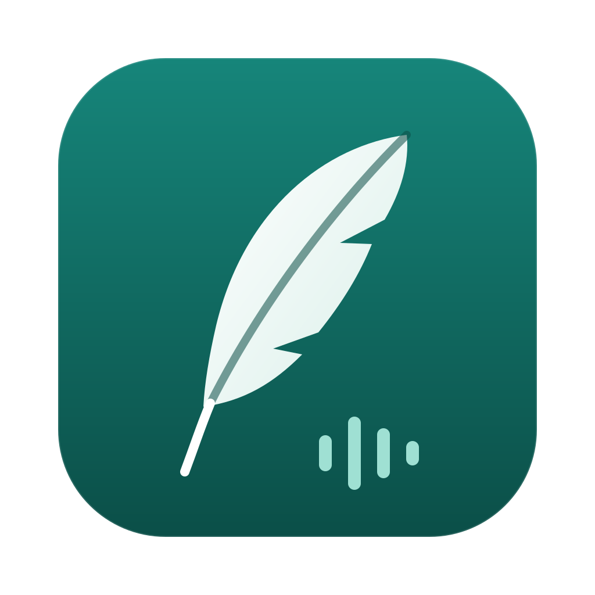

Maintenez fn, parlez. C'est écrit.
Transcription et mise au propre tournent sur la puce du Mac. Rien n'est envoyé.
Formel dans Mail, décontracté dans Messages, à votre goût ailleurs.
Transcription des appels, interlocuteurs séparés, tâches à suivre.